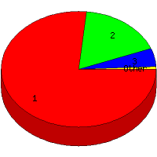

Week of 5/16/2010 to 5/22/2010: Top
4 of
4 File Types (Extensions)
Sorted by Access Count
Individual file types as determined by file extensions. All URLs that
do not contain an extension are counted as directories.

| Rank |
Type |
Accesses |
% |
Bytes |
% |
| 1 |
html
|
136 |
76.84 |
2,243,868 |
92.36 |
| 2 |
Directory (folder)
|
31 |
17.51 |
170,160 |
7.00 |
| 3 |
ico
|
9 |
5.08 |
9,842 |
0.41 |
| 4 |
ru
|
1 |
0.56 |
5,672 |
0.23 |